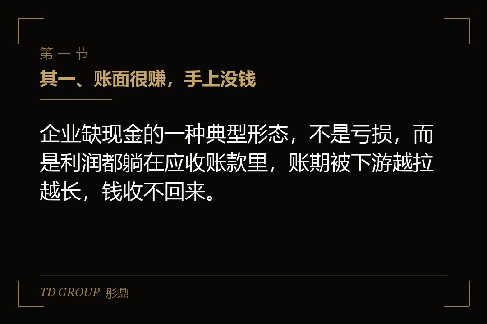
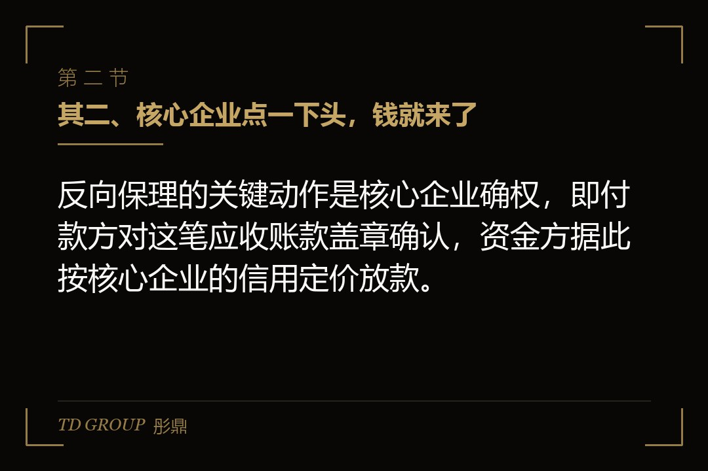
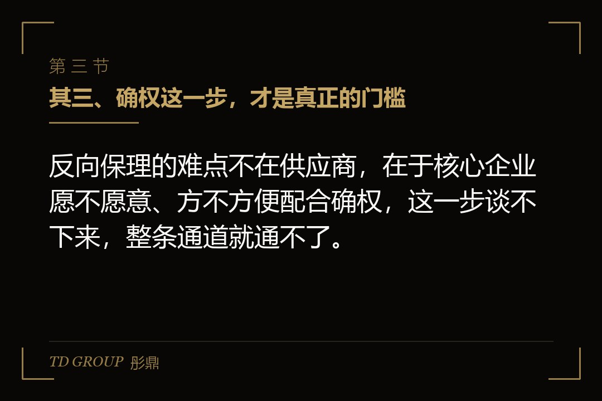

其一、账面很赚，手上没钱

结论先行：企业缺现金的一种典型形态，不是亏损，而是利润都躺在应收账款里，账期被下游越拉越长，钱收不回来。
假设有家给主机厂供汽车零部件的企业，一年营收三个亿，毛利率也过得去，报表上每年都是正的。问题在于它的主要客户只有两三家整车厂，账期从最初的六十天，一点点被拉到九十天、一百二十天。应收账款常年压在七八千万，最紧的时候连给工人发工资都要先跟银行打招呼。
它去银行借过。银行看了它的报表，说现金流不稳定、抵押物不足，给的额度有限、利率也不低。它也想过把应收账款打折卖掉，但买方一看下游是那几家强势主机厂，反而更担心钱收不回来。
这就是很多给大企业供货的中小供应商的共同处境：客户很大、订单很稳，但回款很慢；自己规模不够，靠自身信用又借不到便宜的钱。
其二、核心企业点一下头，钱就来了

结论先行：反向保理的关键动作是核心企业确权，即付款方对这笔应收账款盖章确认，资金方据此按核心企业的信用定价放款。
打个比方，普通保理是供应商拿着自己写好的欠条去找人要钱，对方要掂量供应商自己还值不值；反向保理是那个欠钱的大公司自己站出来，在欠条上签一个字，说这笔钱我认，到期我付。资金方看的是签字那个人的信用，不是拿欠条来的那个人。
所以反向保理和普通保理差在信用主体上。普通保理里，资金方看的是供应商能不能回款，风险落在供应商；反向保理里，确权之后资金方主要看核心企业，供应商自己的信用退到第二位。
这也是它能便宜的原因。核心企业通常是银行争着放款的优质客户，贴着它的信用，供应商拿到的资金成本，往往比自己去借要低一截。
把一条典型流程走一遍就更清楚。供应商向核心企业交货、开票，形成一笔应付账款；核心企业在平台上对这笔账款做线上确权；供应商看到确权后，把这条应收账款的收款权转让给资金方，资金方按核心企业的信用定价、扣除利息后放款；到期那天，核心企业把钱直接付给资金方。整个过程中，供应商要做的是交付、开票、发起融资，核心企业要做的是确权、到期付款，资金方要做的是核定信用、放款、收款。
这条流程里最值得盯的是两处：确权是不是线上实时完成，以及到期付款是不是直接进资金方账户。两处都顺畅，供应商拿到钱的速度和确定性才有保证。
其三、确权这一步，才是真正的门槛

结论先行：反向保理的难点不在供应商，在于核心企业愿不愿意、方不方便配合确权，这一步谈不下来，整条通道就通不了。
确权看起来只是盖一个章，实际牵扯的是核心企业内部的付款流程、财务系统，还有它自己的资金安排。对核心企业来说，配合确权等于把自己的信用借给上游用，还要为此搭一套确认、复核、到期兑付的机制。
所以现实里常见的情况是：核心企业愿意配合，但只对一部分供应商、一部分应付账款开放；或者要求供应商先入它的供应商管理平台，把采购、对账、开票都搬到那个系统里。搬到系统里，确权才能在线上完成，也才谈得上放款。
供应商这边要明白，确权不是白来的。核心企业配合的前提，往往是你得接受它那套平台规则、接受它指定的资金方，甚至接受它把这笔融资的成本体现在你的报价里。真正的门槛在这里。
那核心企业为什么还愿意做这件事？因为它自己也有账要算。通过反向保理，它可以把对上游的账期再拉长，把本来该付的钱压在自己账上更久，改善自己的现金流；同时让供应商有稳定、便宜的钱可用，供应链就不会因为上游缺钱而断货；有些核心企业还能从平台方拿到一部分利差返点。它是在用自己那点信用做杠杆，换回更长的账期和更稳的供货，而不是单纯做好事。看清这一点，供应商谈的时候才知道自己手里有什么、对方要的是什么。
其四、到底省不省钱，要算一笔总账
结论先行：反向保理省不省钱，不能只看利率低，要把融资成本、账期换来的时间、以及可能的隐性代价放在一起算。
假设那家零部件企业有一笔两千万的应收账款，账期一百二十天。走反向保理，确权之后资金方按年息几个点收利息，供应商提前拿到钱。表面看，早拿钱、利息还比银行贷款低，是白赚的。
但要把另一面也算进去。核心企业可能因为你用了这个融资，反过来把原来六十天的账期拉长到一百二十天，甚至更长——因为它知道你缺钱也能从平台拿到钱，就没有动力早付。原本是它欠你的钱，现在变成了你为它的拖账付利息。
还有报价的问题。有些核心企业会明说，你用反向保理提前拿钱，那这个融资成本要在下一轮报价里让出来一部分。让出来的这部分，实际就是你的真实成本，只不过它不在利息单子上。
所以真正该问的不是利率高低，而是：账期被拉长之后，你多承担了多少资金占用，反向保理替你消掉的那部分，是不是大于它的成本。
拿那家零部件企业再算一遍。它一年三个亿营收，如果账期从六十天拉到一百二十天，多出来的六十天意味着平均多占用了五千万左右的资金。假设它自己的资金成本在十个点上下，这五千万一年就多出五百万的负担。
反向保理帮它提前拿到钱、利息按核心企业信用只有几个点，等于用更低的价格把这五千万的占用补上了。这样一进一出，它才是真省了钱；反过来，如果它本来账期就是三十天、根本不缺现金，硬上反向保理去提前拿钱，那多付的利息就是纯粹的浪费。
其五、协议里容易被略过的三条
结论先行：反向保理的协议里，追索安排、回购条款与额度上限这三条，直接决定了风险最后落在谁头上。
其一，追索权。有些产品写的是无追索权，资金方确权后向核心企业收款，供应商一旦拿到钱就不再承担还钱义务；有些则保留了追索权，核心企业到期不付，资金方可以回头找供应商。这一条要逐字看清楚，它决定这笔钱是不是真正出表、风险是不是真正转移。
其二，回购条款。有些安排里，应收账款到期核心企业没付，平台会要求供应商把这条应收账款按原价买回去。看起来只是程序，实际是把核心企业的信用风险又塞回给了供应商。
其三，额度。反向保理通常按核心企业给的额度上限来，额度用完了，再急的单也放不了。供应商要盯着的是这个额度会不会随核心企业的采购波动而收窄，尤其在自己最缺钱的那个时点。
除了这三条，还有一件更隐蔽的事值得提前想到：核心企业一旦信用恶化，整条通道会一起收窄。反向保理贴着核心企业的信用，也就意味着供应商的融资命脉和核心企业的信用绑在了同一条绳上。
核心企业只要评级下调或者付款出现延迟，资金方会立刻收缩额度、抬高价格，甚至停止新发放款，供应商一夜之间就回到没有钱可用的状态。所以即便有反向保理可用，供应商也不该把它当成可以依赖的全部，更不该把正常的银行授信和自有资金缓冲全部退掉。
其六、做之前先核清四件事
结论先行：要不要上反向保理，先把核心企业认不认、账期和成本怎么算、追索回购怎么写、鸡蛋放不放进一个平台这四件事核清，比急着签平台协议更重要。
其一，核心企业到底认不认、能认多少。先问清楚它对确权的真实态度和额度，别把这条通道当成随时可用的钱。
其二，把融资成本和账期放在一起算。账期从六十天被拉到一百二十天，多出来的六十天资金占用，是不是真的被反向保理的便宜利率盖住了。
其三，看清楚追索和回购这两条怎么写。无追索权和有追索权，在核心企业出问题的时候是天壤之别，别只盯着利率那一行。
其四，别把所有鸡蛋放进一个平台。确权、对账、放款都集中在一家平台，等于把这条融资命脉交了出去，至少要留一条备用的收款和融资通道。
这四件事想清楚了，反向保理才是帮你把账面利润变成手里的现金；没想清楚就签，它可能只是把你从「账期长」挪进了「更长的账期加一笔利息」。
本文为知识梳理，不构成专业意见。具体的融资成本、追索安排、额度与确权机制以双方正式协议与资金方现行规则为准，建议由律师与财务顾问共同核过之后再签。